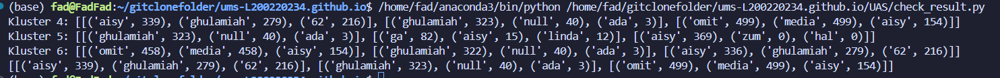

Penjelasan tahap utama dalam pipeline KMeans clustering menggunakan Metaflow.
Fadhil Erdya Qashmal, L200220234
Memuat dan memproses data chat menggunakan preprocessing dan normalisasi TF-IDF.
Fungsi start pada metaflow akan memuat data dari dataset chat berbentuk TAR yang sudah dibersihkan oleh method load_chat milik preprocessing,
. Setelah dibersihkan method scale_data akan melakukan pengskalaan (scaling) menggunakan TF-IDF dan dilakukan normalisasi setelahnya. Parameter cluster Kmeans didefinisikan di fungsi ini dengan 4, 5, dan 6 cluster disiapkan untuk eksperimen KMeans.
Start Flow pada Metaflow:
@step
def start(self):
import preprocessing
docs = preprocessing.load_chat(self.num_docs)
self.mtx, self.cols = preprocessing.scale_data(docs)
self.kmeans_params = [4, 5, 6]
self.next(self.train_kmeans, foreach='kmeans_params')
Fungsi Preprocessing:
Tahapan preprocessing bertujuan untuk mempersiapkan data teks agar dapat digunakan dalam analisis lebih lanjut, seperti klasterisasi menggunakan KMeans. Berikut adalah tahapan utama dalam preprocessing:
WordNetLemmatizer dari pustaka NLTK dan juga tokenisasi, yang membantu mengurangi variasi kata dan meningkatkan kualitas analisis teks.
Kumpulan Fungsi untuk tahapan Pra-Pemrosesan Data:
def clean_data(df):
df = df.dropna(subset=['Konten'])
df = df[df['Konten'].str.strip() != ""]
print(f"Dataset cleaned. Remaining records: {len(df)}.")
return df
def preprocess_text(text):
text = text.lower()
text = text.translate(str.maketrans('', '', string.punctuation))
words = word_tokenize(text)
lemmatized_words = [lemmatizer.lemmatize(word, pos=wordnet.VERB) for word in words]
return ' '.join(lemmatized_words)
def preprocess_dataset(df):
df = clean_data(df)
df['Konten'] = df['Konten'].apply(preprocess_text)
print("Preprocessing completed.")
return df
def load_chat(nums_docs):
tar_path = "../UAS/chat_cleaned.tar"
file_name = "chat_cleaned.csv"
try:
with tarfile.open(tar_path, "r:*") as tar:
member = tar.getmember(file_name)
with tar.extractfile(member) as f:
df = pd.read_csv(f)
df = clean_data(df)
df = preprocess_dataset(df)
print(f"File '{file_name}' successfully loaded from '{tar_path}'.")
return df
except FileNotFoundError:
print(f"File '{tar_path}' not found.")
except KeyError:
print(f"'{file_name}' not found in the archive.")
except Exception as e:
print(f"Error occurred: {e}")
return df
Fungsi scale:
Fungsi scale_data bertujuan untuk mengonversi teks yang telah diproses menjadi representasi numerik dalam bentuk matriks TF-IDF dan melakukan normalisasi pada data tersebut.
Proses ini sangat penting untuk memastikan bahwa setiap kata yang ada dalam dataset memiliki bobot yang relevan tanpa terpengaruh oleh frekuensi kata yang tidak signifikan.
Berikut adalah penjelasan kode dari tahapan yang dilakukan dalam fungsi ini:
TfidfVectorizer pada data yang telah diproses. Di sini, max_features=1000 membatasi jumlah kata yang digunakan (fitur) menjadi 1000 kata paling relevan.Normalizer digunakan untuk menormalkan setiap dokumen dalam matriks sehingga panjang vektornya menjadi satu (unit norm). Hal ini membuat model lebih mudah dalam menemukan pola yang relevan.
def scale_data(text_data, binary=False):
processed = text_data['Konten']
vectorizer = TfidfVectorizer(max_features=1000)
tfidf_matrix = vectorizer.fit_transform(processed)
print(f"TF-IDF matrix shape: {tfidf_matrix.shape}")
normalizer = Normalizer()
mtx = normalizer.fit_transform(tfidf_matrix)
print(f"Normalized matrix shape: {mtx.shape}")
cols = vectorizer.get_feature_names_out()
return mtx, cols
Melatih model KMeans clustering dengan jumlah kluster yang bervariasi.
Pada langkah ini, model KMeans dilatih dengan data yang telah diproses sebelumnya. Berikut adalah langkah-langkah utama:
@step
def train_kmeans(self):
self.k = self.input
model = KMeans(n_clusters=self.k, random_state=42, n_init=10)
mtx_dense = self.mtx.toarray()
model.fit(mtx_dense)
self.clusters = model.predict(mtx_dense)
self.next(self.analyze)
Menganalisis hasil clustering dengan menghitung kata-kata yang dominan.
Pada langkah ini, dilakukan analisis terhadap hasil clustering dengan menghitung kata-kata yang paling dominan dalam setiap kluster. Fungsi utama dalam langkah ini adalah top_data_points, yang menghitung kata-kata yang paling sering muncul dalam kluster dan memberikan informasi tentang kata-kata tersebut.
Langkah-langkah utama dalam kode ini:
analyze Flow pada Metaflow:
@step
def analyze(self):
self.top = top_data_points(self.k, self.clusters, self.mtx, self.cols)
self.next(self.join)
Fungsi top_data_points bertujuan untuk mencari kata-kata yang paling dominan di setiap kluster setelah model KMeans dilatih. Berikut adalah penjelasan dari setiap bagian fungsi:
np.where(clusters == i).np.argsort.
from itertools import islice
import numpy as np
def top_data_points(num_clusters, clusters, mtx, columns):
top = []
for i in range(num_clusters):
rows_in_cluster = np.where(clusters == i)[0]
word_freqs = mtx[rows_in_cluster].sum(axis=0).A[0]
ordered_freqs = np.argsort(word_freqs)
top_words = [(columns[idx], int(word_freqs[idx]))
for idx in islice(reversed(ordered_freqs), 3)]
top.append(top_words)
return top
Menggabungkan hasil dari berbagai eksperimen KMeans menjadi satu data terstruktur.
Langkah Join digunakan untuk menggabungkan hasil dari berbagai eksperimen KMeans yang dilakukan sebelumnya ke dalam satu struktur data yang lebih terorganisir. Pada tahap ini, hasil top words dari setiap kluster, yang telah dihitung di langkah sebelumnya, digabungkan berdasarkan jumlah kluster yang digunakan dalam setiap eksperimen.
Langkah-langkah utama dalam kode ini:
@step
def join(self, inputs):
self.top = {inp.k: inp.top for inp in inputs}
self.next(self.end)
Mengakhiri pipeline dan menyimpan hasil akhir.
Langkah End digunakan untuk menandai akhir dari alur kerja pipeline dan melakukan tindakan terakhir, seperti menyimpan hasil yang telah diproses. Pada kode ini, fungsi `end` tidak melakukan tindakan khusus (hanya menggunakan `pass`), yang berarti bahwa alur ini hanya selesai tanpa ada langkah tambahan yang dilakukan setelahnya.
@step
def end(self):
pass
Menampilkan Hasil Clustering Menggunakan K-Means dan Metaflow
Langkah ini berfungsi untuk menampilkan hasil akhir dari proses clustering yang dilakukan menggunakan KMeans dan MetaFlow. Setelah pipeline selesai dijalankan, kita dapat mengakses hasil clustering yang disimpan dalam atribut `run.data` pada objek `Flow`. Kode berikut berfungsi untuk mengecek hasil clustering dari tiga kluster yang telah diproses, yaitu Kluster 4, Kluster 5, dan Kluster 6, dan menampilkan kata-kata dominan yang ditemukan dalam setiap kluster tersebut.
run = Flow('KMeansFlow').latest_run
k = run.data.top[4][:3]
l = run.data.top[5][:3]
m = run.data.top[6][:3]
print(f"Kluster 4: {k}")
print(f"Kluster 5: {l}")
print(f"Kluster 6: {m}")
Berikut adalah Hasil Clustering Menggunakan Kmeans dan MetaFlow dari salah satu Grup Whatsapp yang saya Masuki
Menampilkan Hasil Clustering Menggunakan K-Means dan Metaflow
Hasil Clustering Menggunakan Kmeans dan MetaFlow dari salah satu Grup Whatsapp yang saya Masuki
Kesimpulan:
Berdasarkan hasil clustering, terlihat bahwa metode K-Means dengan bantuan MetaFlow mampu mengelompokkan data chat ke dalam beberapa kluster yang memiliki kata kunci dominan, seperti 'aisy', 'ghulamiah', dan 'media'. Proses ini menunjukkan efektivitas analisis topik dalam grup WhatsApp dengan menggunakan metode ini.
Dengan menggunakan MetaFlow, proses ini tidak hanya lebih terstruktur dan mudah dipahami, tetapi juga meningkatkan efisiensi dalam eksperimen dan pelatihan model, memberikan panduan jelas untuk analisis hasil clustering. Berikut adalah hasil visualisasi dari clustering yang dilakukan